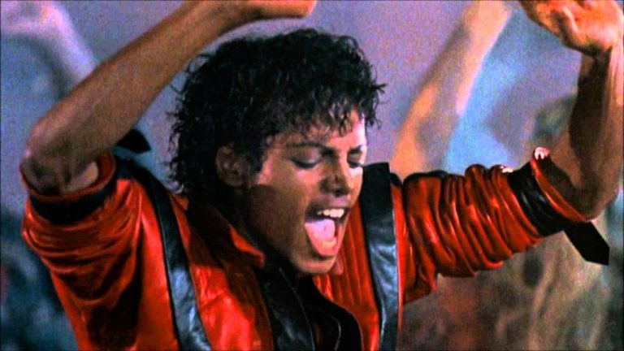
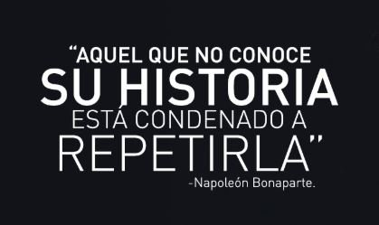

Michael fue sin lugar a dudas una persona excepcional en el amplio sentido de la palabra. Alguien que
cambio la industria musical para siempre y que gano innumerables premios, y que, además, sigue presente
en la mente y el corazón de muchos fanáticos de la época y actuales. Fue un artista como nunca antes
ha habido y como muy probablemente jamás habrá de nuevo.

No obstante, más allá de la fama y el éxito, existía un ser humano, uno tan humano como tú, yo o cualquiera. Alguien
que tenía miedos, inseguridades y ambiciones propias; pero que en muchas ocasiones (por no decir la mayoría de las veces)
fue visto más como un objeto rentable que como una persona. Esto hizo que Jackson, teniéndolo todo, tuviera también
muchas carencias, sobre todo a nivel emocional y psicológico.
"Cuando creces como yo lo hice, delante de cien millones de personas desde los 5 años, eres automáticamente
diferente. Mi infancia me fue totalmente arrebatada [...]. Fue sustituida por trabajo duro, lucha y dolor" (Michael Jackson, 1993).
Considero que, si bien la historia de Michael tuvo un desenlace triste, es digna de recordar y no olvidar
debido a lo excepcional que fue y a todas las cosas buenas que el hizo en vida, y que nos dejó (que no son
pocas).
También creo que su historia nos sirve de recordatorio de que, aquellas personas con mucha fama o poder en el mundo
del espectáculo, siguen siendo personas. Eso sin mencionar todas las demás lecciones y enseñanzas que nos deja
sobre la fama, el uso de fármacos, el chisme, las cirugías plásticas, la explotación infantil, etc.

Me llamo Micaela y actualmente tengo 21 años, y soy fan de Michael Jackson desde los 5-6 años. La primera vez que
escuche una canción de este artista fue cuando mi papa nos compró a mí y a mi hermano un CD de sus 10 mejores canciones.
Este CD no solo incluía el audio de las canciones, sino que iba acompañado por los videos.
En ese momento me enamore de las melodías y los pasos de baile que se presentaban en los videoclips, y con el paso de
los años eso no cambio. Al contrario, creo que mi gusto por sus canciones y mi admiración hacia su persona se intensifico
al investigar más respecto a su vida y al conocer más acerca de sus trabajos y logros.